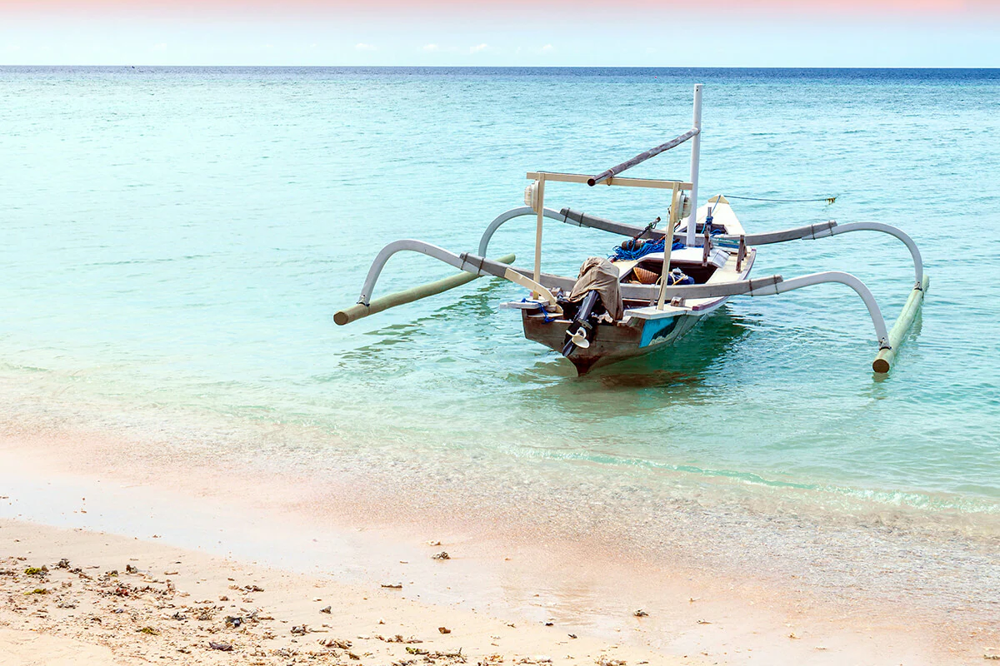
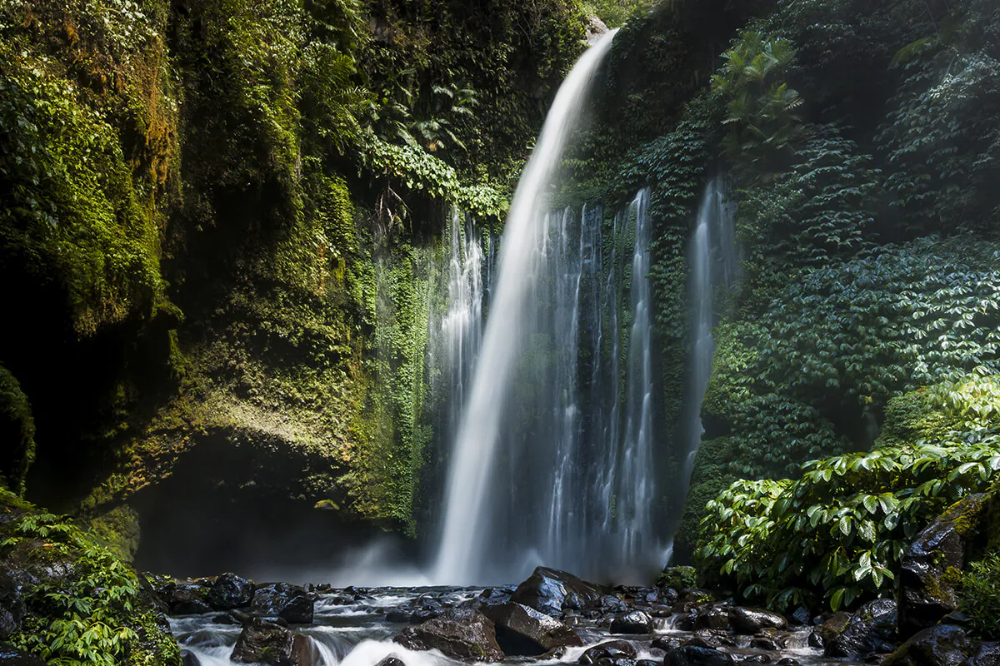
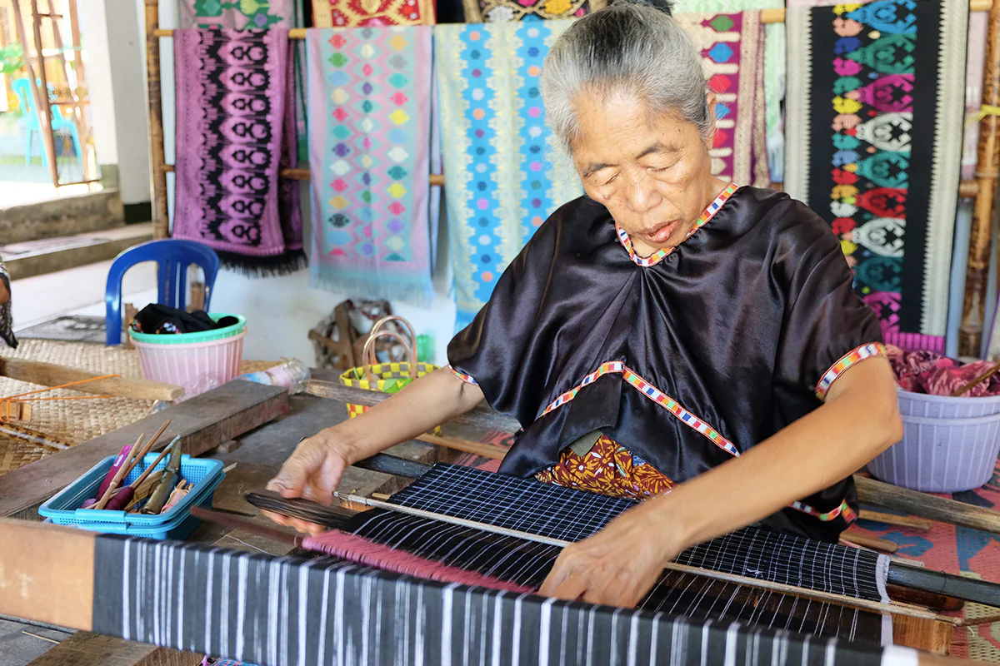

Lombok
Dengan pantai-pantai nan memesona, Gunung Rinjani yang indah, serta pemandangan bawah laut yang spektakuler, Lombok di Nusa Tenggara Barat akan memanjakan mata Sobat Pesona baik saat berada di darat maupun di air. Tidak heran, jika pulau kecil ini menjelma menjadi destinasi paling populer di Nusa Tenggara Barat.
Mencoba Trek yang Menantang
Sobat Pesona ingin melakukan sesuatu yang menantang dan memacu adrenalin? Yuk, mendaki gunung berapi dengan trek yang curam. Kalau Sobat Pesona lebih suka sesuatu yang tidak terlalu menantang, coba sewa sepeda lalu berkeliling melintasi hamparan sawah yang hijau. Apapun pilihan Sobat Pesona, Lombok tetap akan menyuguhkan pemandangan alam yang fantastik.
Pulau Lombok dan Bali dipisahkan oleh Selat Lombok di sebelah barat, sedangkan di sebelah timur Pulau Lombok dan Sumbawa dipisahkan oleh Selat Alas.
Suku Sasak merupakan suku yang mendominasi Pulau Lombok. Mereka tinggal di lima wilayah, antara lain Lombok Utara, Lombok Tengah, Lombok Timur, Lombok Barat, dan Kota Mataram yang merupakan ibukota dari Nusa Tenggara Barat.
Lombok Utara adalah tempat di mana Gunung Rinjani berada. Gunung Rinjani adalah salah satu gunung api tertinggi di Indonesia yang ketinggiannya mencapai 3.726 meter di atas permukaan laut. Danau Segara Anak yang berada di Gunung Rinjani, juga menjadi spot yang wajib dikunjungi. Pemandangannya yang disuguhkan sangat menakjubkan deh pokoknya!
.jpg)
Destinasi
Lombok dikenal memiliki banyak gili atau pulau kecil. Di antara lebih dari 20 gili yang ada di sana, ada tiga gili yang paling terkenal yakni Gili Trawangan, Gili Meno dan Gili Air.
Gili Trawangan atau Gili T adalah tempat favorit wisatawan untuk menghabiskan waktu di siang hari. Sobat Pesona bisa bersantai di sana sambil berjemur. Ketika malam tiba, Sobat Pesona bisa menikmati suasana pantai yang indah dengan diterangi cahaya rembulan. Sobat Pesona juga bisa mencoba scuba diving atau bisa juga nih mengelilingi pulau dengan menggunakan sepeda.
Gili Meno memiliki hamparan pantai pasir putih yang panjang. Spot ini cocok banget buat Sobat Pesona yang menginginkan suasana tenang dan agak terpencil. Destinasi ini biasanya jadi tujuan favorit pasangan yang sedang berbulan madu. Ada banyak akomodasi yang dapat Sobat Pesona temukan di sini, mulai dari bungalow yang unik, hingga resor mewah dengan pemandangan alam yang ciamik.
Gili Air menyuguhkan nuansa yang berbeda dari dua gili sebelumnya. Gili Air menjadi tempat yang bisa digunakan baik untuk berpesta, bersantai, maupun menyendiri di pinggir pantai. Sobat Pesona bisa menjelajahi keindahan tempat ini dengan naik kereta kuda atau dengan berenang.
Lombok Tenang adalah pusat pantai-pantai yang memesona. Ada Pantai Kuta, Pantai Tanjung A'an, Pantai Mawun, dan masih banyak lagi. Sobat Pesona bisa bermain dengan ombak di Pantai Selong Belanak, atau jika menyukai pegunungan silahkan datang ke Bukit Merese.
Menyatu Dengan Penduduk Lokal
Untuk mendapatkan pengalaman yang lebih otentik, Sobat Pesona bisa berkunjung ke desa-desa tradisional dan berkomunikasi dengan Suku Sasak. Sobat Pesona dapat melihat secara langsung bagaimana keseharian mereka, bahkan bisa berkesempatan belajar membuat kain tenun dengan mendatangi Desa Sade dan Rambitan.
Menyebrang ke Pulau Sembawa lewat Pelabuhan di Lombok Timur, Sobat Pesona akan disuguhkan dengan berbagai pemandangan menakjubkan, di antaranya dengan mampir sebentar ke pantai pasir hitam "Obel-Obel" yang mengagumkan.
Di Lombok Barat, Sobat Pesona bisa bersantai di Pantai Senggigi dan bertemu dengan binatang liar di Hutan Monyet Pusuk yang terletak di perbatasan antara Lombok Barat dan Utara. Jika mengunjungi tempat ini, pastikan Sobat Pesona berhati-hati dan menjaga barang bawaan dengan baik, ya.
Bergeser ke kota, ada Mataram sebagai pusat pemerintahan dan industri. Kota ini meliputi kota tua Ampenan, Cakranegara sebagai wilayah komersial, dan Mataram sebagai pusat perkantoran.
Luangkan waktu Sobat Pesona untuk mengunjungi Museum Nusa Tenggara Barat, Kabun Mayura, dan Taman Narmada untuk menemukan cerita-cerita menarik terkait pulau Lombok.
Untuk Sobat Pesona yang berjiwa petualang, silakan mengeksplorasi pesisir pantai selatan. Misalnya saja Pantai Tangsi 'Pink' yang sangat terkenal karena memiliki karang yang indah dan warnanya agak memerah. Sobat Pesona juga bisa mencoba menelusuri trek menantang menuju Air Terjun Senaru dan Air Terjun Benang Kelambu.
Koleksi Souvenir Khas Lombok
Tak afdol rasanya jalan-jalan #DiIndonesiaAja jika tidak membeli buah tangan khas dari destinasi liburan yang dikunjungi, termasuk saat Sobat Pesona sedang berada di Lombok. Ada banyak souvenir khas Lombok yang bisa kamu jadikan oleh-oleh lho, Sobat Pesona. Apalagi oleh-oleh yang paling terkenal dari Lombok selain tenun sasaknya yang mendunia? Nah, jika berkunjung ke Lombok, pastikan Sobat Pesona mampir ke desa-desa wisata penghasil tenun sasak ya, seperti Desa Sade, Desa Sukarara, dan Desa Ende. Selain bisa melihat, belajar, dan membeli kain tenun yang dikenal indah, di beberapa lokasi di ketiga desa ini kamu juga bisa berfoto dengan memakai kain tradisional Lombok, lho!
Selain tenun, ada beberapa kerajinan tangan yang bisa Sobat Pesona jadikan buah tangan untuk orang-orang tersayang. Sebut saja beberapa di antaranya, anyaman ketak yang terbuat dari tanaman liar karya Desa Beleka dan kerajinan tanah liat, seperti anglo, kuali, guci, dan kendi maling yang bisa dengan mudah kamu temukan di daerah Banyumulek, Lombok Barat.
Akses Menuju ke Lombok
- Jalur udara :
- Jalur laut dengan Ferry :
- Jalur laut dengan fast Boat :
Ada penerbangan setiap hari dari Denpasar, Bali ke Mataram, Lombok maupun sebaliknya. Lombok International Airport (LOP) terletak di Tanah Awu, Lombok Tengah, sekitar 30 kilometer dari wilayah tenggara Mataram. Maskapai yang melayani penerbangan ke Lombok antara lain Garuda, Lion Air, Silk Air, dan Transnusa. .
Ferry dengan rute Padang Bai (Bali) dan Lembar (Lombok) beroperasi beberapa kali dalam sehari. Perjalanan dengan transportasi ini membutuhkan waktu sekitar 4-5 jam. Untuk ferry yang dengan rute Labuhan, Lombok dan Poto Tano, Sumbawa juga berjalan beberapa kali dalam sehar, namun dengan waktu perjalanan yang lebih singkat, kurang lebih satu jam setengah.
Blue Water Safari Express adalah salah satu perusahaan yang menawarkan jasa fast boat yang akan membawa Sobat Pesona dari Bali menuju ke Lombok. Ada dua titik keberangkatan di Bali, yakni Serangan (dekat dengan Pelabuhan Benoa) dan Pelabuhan Padang Bai. Sobat Pesona juga bisa melihat gilibookings.com untuk mendapatkan informasi lain terkait transportasi dan akomodasi selama berada di pulau eksotis Lombok.
Berkeliling Lombok
Untuk berkeliling Lombok dengan jalur darat, Sobat Pesona bisa menyewa motor atau mobil dari tempat penyewaan terpercaya. Ada transportasi umum bemo yang dapat mengantarkan Sobat Pesona ke beberapa destinasi wisata. Namun sayangnya, bemo hanya beroperasi di siang hari. Tapi tenang, di malam hari, akan ada banyak ojek. Jika memilih menggunakan jasa ojek, pastikan Sobat Pesona pintar menawar, ya. Transportasi lain yang paling unik adalah cidomo (cikar-dokar-motor) yang mampu membawa kurang lebih 4 orang dan bisa ditemukan di Pantai Senggigi atau di Gili.
Picts Of Morotai